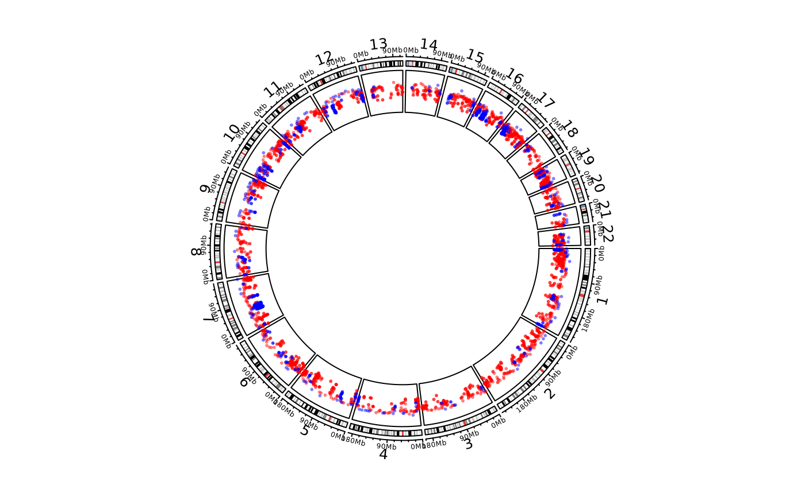

Object ccGenomicTrack will call the function circos.genomicRainfall while drawing.
Arguments
- ...
Arguments passed on to
circlize::circos.genomicRainfalldataA bed-file-like data frame or a list of data frames.
modeHow to calculate the distance of two neighbouring regions, pass to
rainfallTransform.ylimylim for rainfall plot track. If
normalize_to_widthisFALSE, the value should correspond tolog10(dist+1), and ifnormalize_to_widthisTRUE, the value should correspond tolog2(rel_dist).colColor of points. It should be length of one. If
datais a list, the length ofcolcan also be the length of the list.pchStyle of points.
cexSize of points.
normalize_to_widthIf it is
TRUE, the value is the relative distance divided by the width of the region.
Value
Object ccGenomicTrack
Examples
library(circlizePlus)
load(system.file(package = "circlize", "extdata", "DMR.RData"))
cc = ccPlot(initMode="initializeWithIdeogram", chromosome.index = paste0("chr", 1:22))
bed_list = list(DMR_hyper, DMR_hypo)
t1 = ccGenomicRainfall(bed_list, pch = 16, cex = 0.4, col = c("#FF000080", "#0000FF80"))
cc + t1

circos.clear()